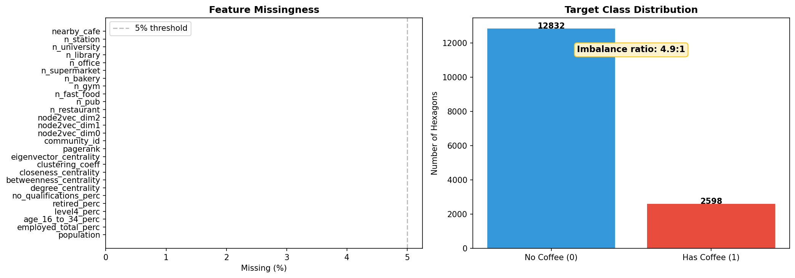
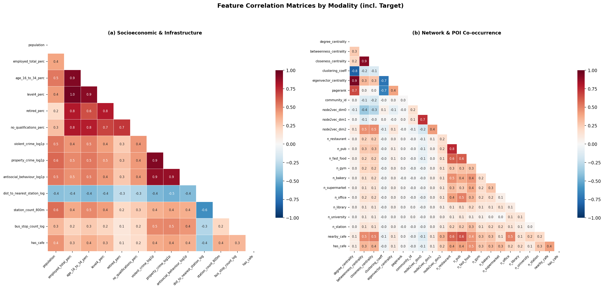
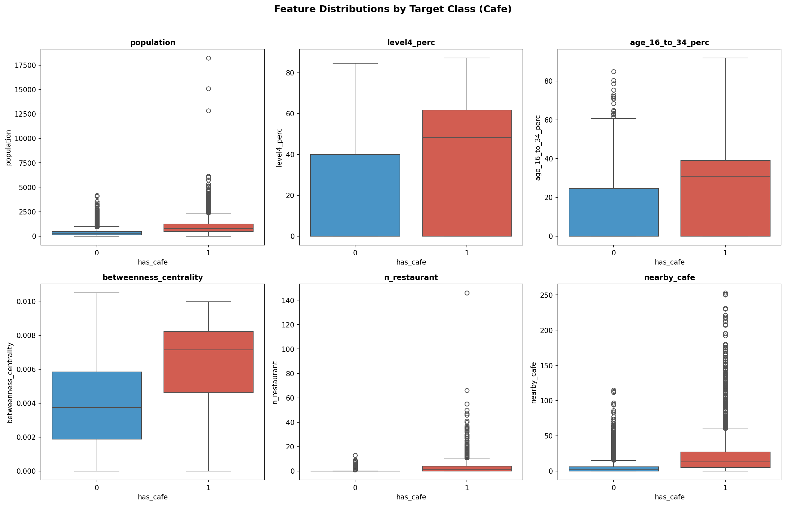
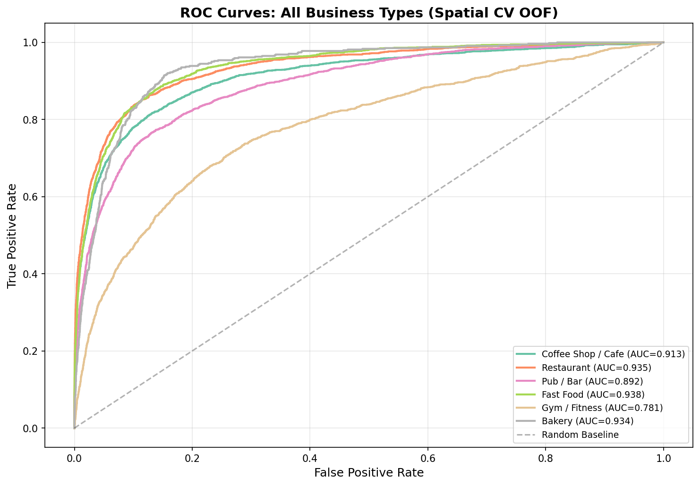
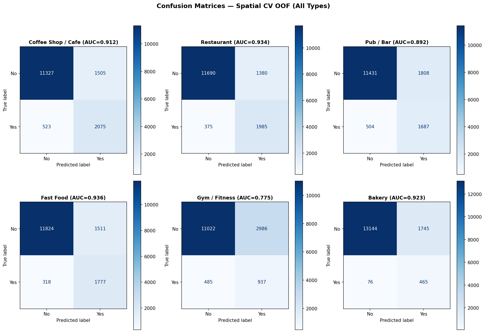
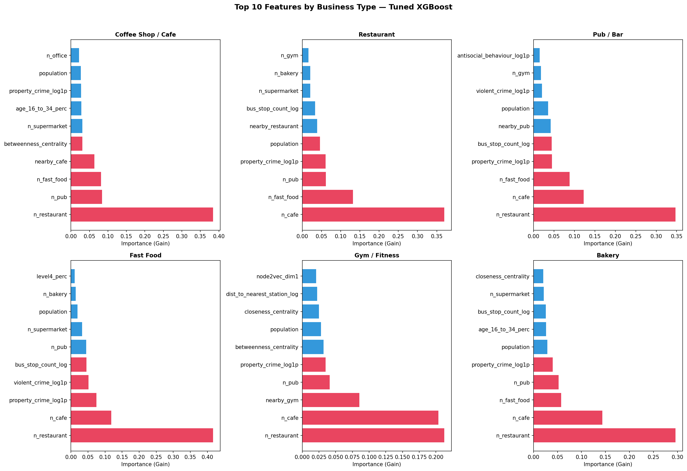
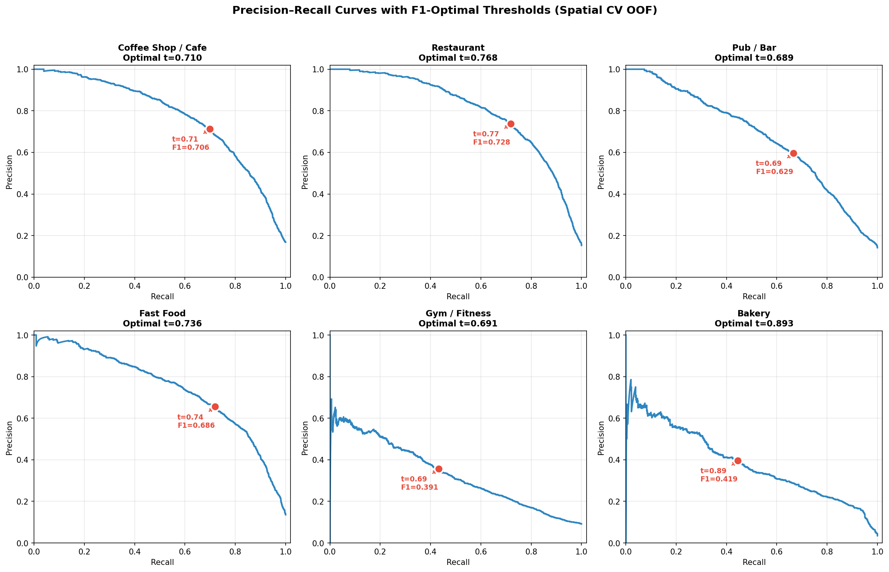
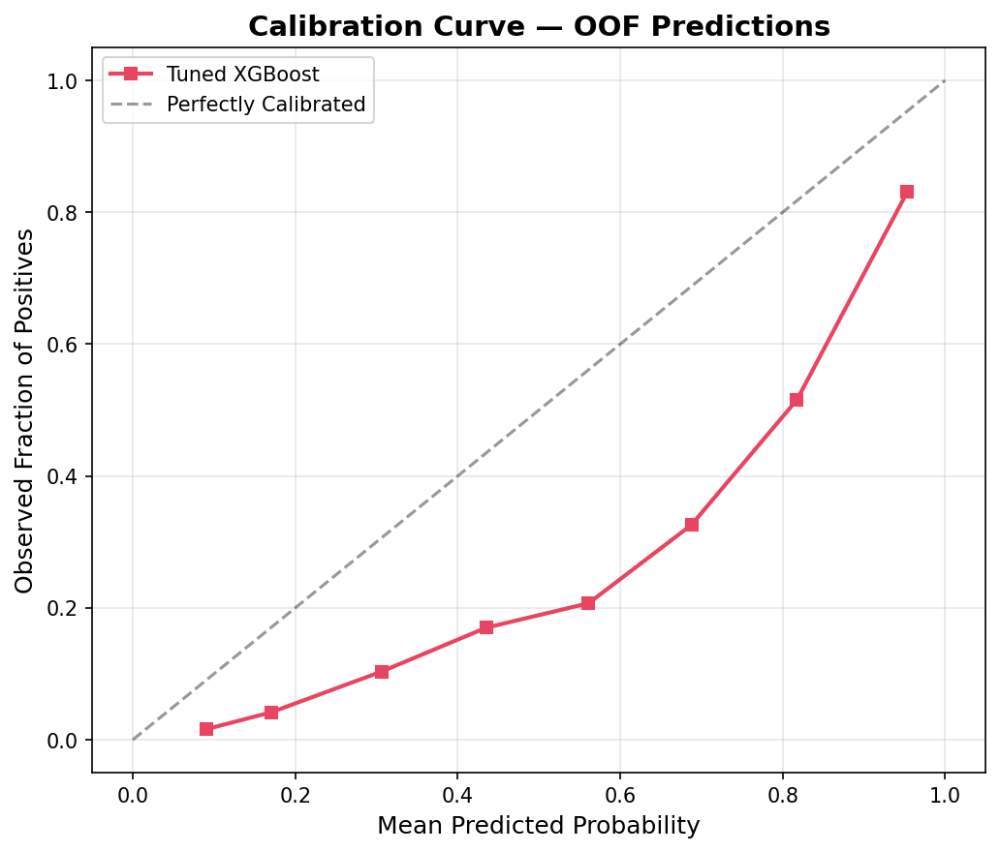
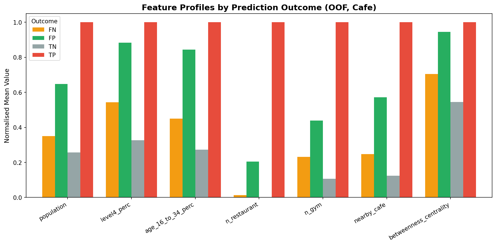
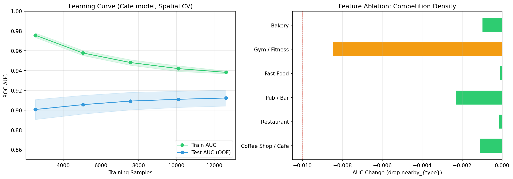

AI-powered site intelligence for retail expansion across Greater London. Identifying high-potential locations across 33 boroughs and 6 business types.
This project identifies optimal locations for new retail businesses across all 33 boroughs of Greater London using multi-modal geospatial data and supervised machine learning. The model supports 6 business types (cafe, restaurant, pub, fast food, gym, bakery). The core insight: a binary classifier's False Positives — locations the model predicts should have a given business but currently don't — represent untapped market opportunities.
In the language of network theory, these are Burt's Structural Holes (1992): positions in a spatial network with high demand signals but no existing supply, now identified by data-driven learning rather than heuristic scoring.
"Can a binary classification model, trained on geospatial features derived from population rasters, census demographics, graph centrality metrics, community structure, and graph embeddings, identify underserved locations (structural holes) for retail businesses across Greater London?"
Resolution 9 (~174m edge) covering 33 London boroughs
Per type: 6 demographic, 6 graph centrality, 1 community, 3 graph embeddings, 10 POI co-occurrence, 1 competition density
Cafe, restaurant, pub, fast food, gym, bakery
False Positives = New sites • Expansion Opportunities = Room for another
| Source | Type | What It Provides |
|---|---|---|
| LandScan (ORNL, 2023) | Raster (~1km) | Population density as a footfall proxy |
| ONS Census 2021 (Digimap) | Tabular (OA level) | Demographics: education, age, employment |
| OpenStreetMap (OSMnx) | Vector (Points) | POIs: cafes, gyms, stations, offices |
| H3 Adjacency Graph | Computed (NetworkX) | 6 centrality metrics, Louvain community detection, Node2Vec embeddings (3D) |
| police.uk (Met Police + City of London, 2021) | Tabular (geocoded) | Crime rates: violent, property, anti-social behaviour per hex |
The pipeline transforms raw geospatial data into actionable site recommendations in six stages.
Three geospatial data modalities are acquired and harmonised into EPSG:27700 (British National Grid).
| Modality | Representation | Example | Precision |
|---|---|---|---|
| Vector | Discrete geometric primitives with exact coordinate pairs | OSM cafe locations (Points), building footprints (Polygons) | Sub-metre |
| Raster | Regular grid of cells, each storing a numeric value | LandScan population grid — each pixel holds a count | ~1 km per pixel |
| Tabular | Attribute records keyed by a spatial identifier | ONS Census CSVs — percentages per Output Area | OA centroid |
Each Point of Interest is classified into a business role relative to the target business type:
| Role | OSM Tags (examples) | Effect on Score |
|---|---|---|
| Competitor | Same type as target (e.g. cafes for cafe model) | Excluded from features (encodes the target) |
| Synergy | gym, university, office, library, co-working | Increases score (complementary foot traffic) |
| Anchor | station (public transport) | Increases score (transit node) |
| Other | bakery, supermarket, restaurant | Contextual enrichment |
For each business type, a competition density feature counts same-type businesses in a k=2 H3 ring (~18 neighboring hexagons, ~350m radius).
Three ONS Census 2021 CSVs (Economic Activity, Age Structure, Qualifications) are merged
on geog_code (Output Area identifier), producing 846 OAs with 7 demographic columns.
Missing values are imputed with the column median.

Run the notebook to auto-generate this figure.'">Fig. 1 — Feature missingness audit (left) and target class distribution (right).

Run the notebook to auto-generate this figure.'">Fig. 2 — Feature correlation matrix.

Run the notebook to auto-generate this figure.'">Fig. 3 — Feature distributions split by target class (cafe).
Uber's H3 library partitions Greater London into hierarchical hexagonal cells. Unlike square grids, hexagons have 6 equidistant neighbours — ideal for walking-distance analysis.
| Resolution | Edge Length | Hex Area | Use Case |
|---|---|---|---|
| 7 | ~1.2 km | ~5.16 km² | District-level |
| 8 | ~460 m | ~0.74 km² | Neighbourhood |
| 9 | ~174 m | ~0.105 km² | Walking-scale (our choice) |
| 10 | ~66 m | ~0.015 km² | Street-level |
At Resolution 9, each hexagon covers roughly the area a person walks in 2 minutes — the micro-unit of the 15-minute city (Moreno et al., 2021).
Census demographics are joined via sjoin_nearest with population-weighted mean
aggregation. Hexes with no OA match receive the borough median (conservative imputation).
Street-level crime data from police.uk (Metropolitan Police + City of London Police, ~1.08M raw records across 2021) is cleaned, deduplicated, and aggregated to H3 hexagons.
The raw data contains significant quality issues that are resolved before feature engineering:
| Issue | Scale | Action |
|---|---|---|
| Exact duplicate rows | ~166,000 (15.7%) | Removed via deduplication |
| Crime ID duplicates | ~40,600 | Jurisdictional overlap at force boundaries; deduplicated by Crime ID |
| Non-London records | ~19,800 | Met Police covers some edge areas (Epping, Elmbridge); filtered by LSOA to 33 boroughs |
| ASB without Crime ID | ~302,000 | By design in police.uk data; retained after exact dedup |
Post-cleaning: ~852,000 verified crime records across all 33 London boroughs.
14 raw crime types grouped into 3 retail-relevant categories:
| Group | Types Included | Retail Signal |
|---|---|---|
| Violent crime | Violence, Robbery, Weapons, Public order, Drugs | Safety perception — deters footfall |
| Property crime | Burglary, Vehicle crime, Theft, Shoplifting, Criminal damage | Operational cost — shrinkage, insurance |
| Anti-social behaviour | ASB | Neighbourhood quality — high street decline |
Each crime group is aggregated per hex, then log-transformed (log1p) to compress
the right-skewed tail — hotspot hexes like Oxford Street and Stratford Westfield have thousands of incidents
while most residential hexes have single digits. Hexes with no crime receive 0
(an observed zero, not imputed with borough median).
| Feature | Description |
|---|---|
violent_crime_log1p | log(1 + violent crime count) — safety signal |
property_crime_log1p | log(1 + property crime count) — retail cost signal |
antisocial_behaviour_log1p | log(1 + ASB count) — neighbourhood quality signal |
The enriched H3 grid becomes a spatial graph where hexagons are nodes and edges connect adjacent hexes. From this graph we extract three layers of structural information.
| Metric | What It Measures | Business Meaning |
|---|---|---|
| Degree | Number of neighbours | Interior (6) vs boundary (<6) connectivity |
| Betweenness | Frequency on shortest paths | Transit corridor importance |
| Closeness | Average distance to all nodes | Central vs peripheral location |
| Clustering | Neighbour interconnection | Neighbourhood cohesion |
| Eigenvector | Influence via well-connected neighbours | Hub proximity (near other hubs) |
| PageRank | Damped random walk steady state | Foot-traffic accumulation potential |
The Louvain algorithm partitions the H3 adjacency graph
into communities, maximising modularity. Each hexagon receives a community_id
capturing which spatial neighbourhood cluster it belongs to.
Node2Vec learns a 3-dimensional vector representation for each hexagon by simulating biased random walks on the graph. Hexagons with similar graph neighbourhoods receive similar embeddings, even if geographically distant.
Where DH = Level 4 qualification % / 100 (demand proxy), S = synergy count, A = anchor count, C = competitor count.
Binary classification: for each of 6 business types, predict whether a hexagon should contain that business. The commercially valuable output is the False Positives — locations predicted as suitable that have no current supply.
| Modality | Count | Features |
|---|---|---|
| Footfall | 1 | population (LandScan zonal sum) |
| Demographics | 5 | employed_total_perc, age_16_to_34_perc, level4_perc, retired_perc, no_qualifications_perc |
| Crime Rates | 3 | violent_crime_log1p, property_crime_log1p, antisocial_behaviour_log1p |
| Graph Centrality | 6 | degree_centrality, betweenness_centrality, closeness_centrality, clustering_coeff, eigenvector_centrality, pagerank |
| Community Structure | 1 | community_id (Louvain) |
| Graph Embeddings | 3 | node2vec_dim0/1/2 |
| POI Co-occurrence | 10 | Counts of all 11 POI types except the target type |
| Competition Density | 1 | nearby_{type} — same-type businesses in k=2 ring |
Standard k-fold CV violates spatial independence. We group Resolution-9 hexes by their Resolution-7 parent cell (~0.74 km² blocks). All hexes sharing a parent are assigned to the same fold, preserving spatial integrity across 5 folds.
| Model | Type | Imbalance Handling | Rationale |
|---|---|---|---|
| Logistic Regression | Linear | class_weight='balanced' | Interpretable baseline |
| Random Forest | Bagged ensemble | class_weight='balanced' | Non-linear, robust |
| XGBoost | Boosted ensemble | scale_pos_weight | State-of-the-art tabular |

Run the notebook to auto-generate this figure.'">Fig. 4 — ROC curves (out-of-fold, spatial CV)

Run the notebook to auto-generate this figure.'">Fig. 5 — Confusion matrices (out-of-fold, all 6 types)

Run the notebook to auto-generate this figure.'">Fig. 6 — Top 10 features by business type (XGBoost gain)

Run the notebook to auto-generate this figure.'">Fig. 7 — Precision–Recall curves with F1-optimal thresholds

Run the notebook to auto-generate this figure.'">Fig. 8 — Calibration curve

Run the notebook to auto-generate this figure.'">Fig. 9 — Failure mode analysis
| Business Type | OOF AUC | Train AUC | Gap | Verdict |
|---|---|---|---|---|
| Coffee Shop / Cafe | 0.9113 | 0.9314 | 0.020 | Excellent |
| Restaurant | 0.9182 | 0.9376 | 0.019 | Excellent |
| Pub / Bar | 0.9220 | 0.9524 | 0.030 | Very Good |
| Fast Food / Takeaway | 0.8923 | 0.9125 | 0.020 | Excellent |
| Gym / Fitness | 0.8765 | 0.9529 | 0.076 | Moderate |
| Bakery | 0.8635 | 0.9118 | 0.048 | Acceptable |

Run notebook Cell 35 to auto-generate this figure.'">Fig. 10 — Learning Curve (left) and Feature Ablation (right)
| Quadrant | Meaning | Business Value |
|---|---|---|
| False Positive | Model says YES, reality is NO | Site recommendation — highest commercial value |
| Expansion Opportunity | Model says YES, reality is YES, low saturation | Room for another — high demand, few competitors |
| True Positive | Model says YES, reality is YES | Validates model — correctly identifies existing shops |
| True Negative | Model says NO, reality is NO | Correctly rejects unsuitable locations |
| False Negative | Model says NO, reality is YES | Niche shops not captured by feature set |
| Limitation | Impact |
|---|---|
| Static POI snapshot | OSM data reflects current state; recent openings/closings not captured |
| Temporal snapshot | 2021 Census + 2023 LandScan; openings/closings since not captured |
| No revenue ground truth | Target is presence/absence, not profitability |
| No real-time footfall | LandScan is an estimate; no mobile signal data |
| No rental cost data | Commercial viability depends on rent, which is not modelled |
All model metrics in one place — AUC scores, outcomes, top features, and recommendations. Copy a structured plain-text summary with the button below.
These locations have all the learned characteristics of successful sites but no existing business of this type — unmet demand in the market.
Loading recommendations…